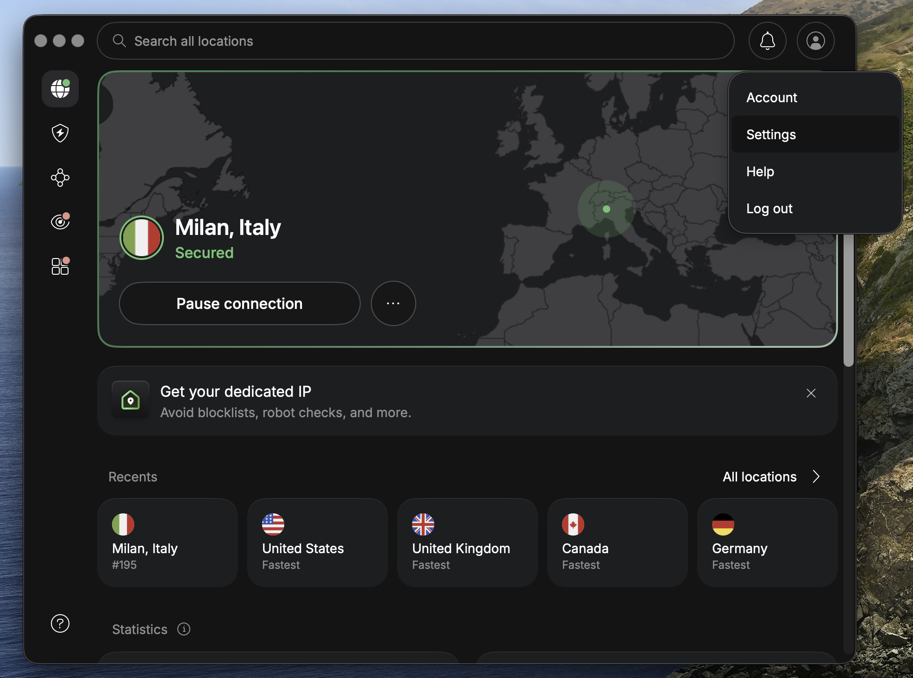
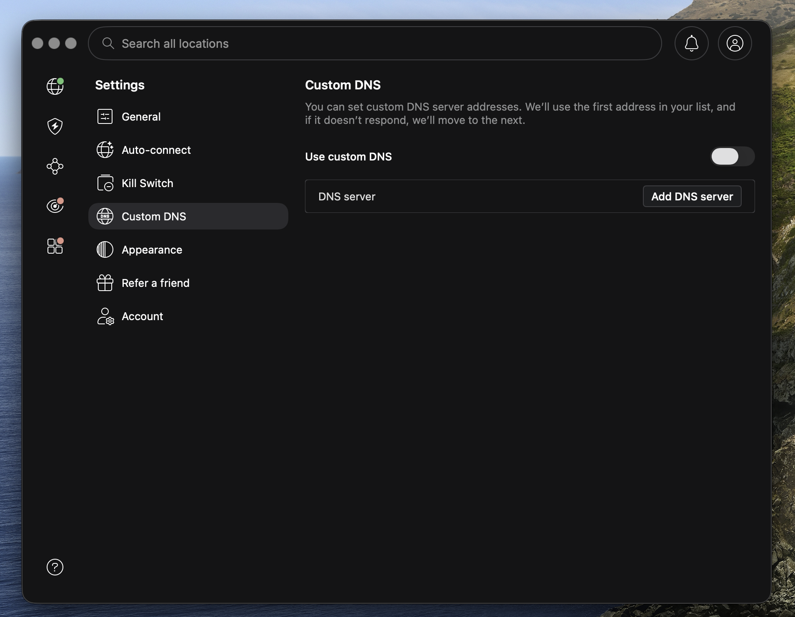
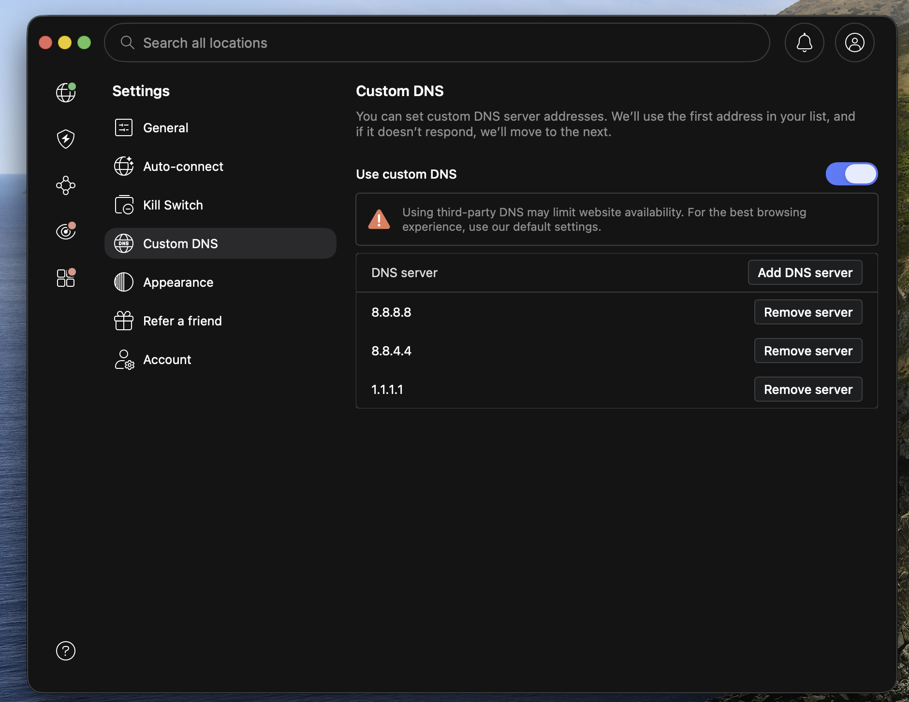

Een stap-voor-stap handleiding om je eigen DNS-servers te configureren binnen de NordVPN-app.
Deze configuratie is nodig om dm-vpn.med-info.nl correct te kunnen bereiken via NordVPN. Standaard worden de DNS-verzoeken van NordVPN niet altijd juist afgehandeld voor dit adres, waardoor de verbinding kan mislukken. Door aangepaste DNS-servers in te stellen los je dit probleem op.
Met aangepaste DNS-servers bepaal je zelf welke DNS-resolvers NordVPN gebruikt. NordVPN gebruikt het eerste adres in je lijst; als dat niet reageert, schakelt het automatisch over naar het volgende.
Open de NordVPN-app op je Mac. Klik rechtsboven op het profielicoon en kies vervolgens Settings (Instellingen) uit het uitklapmenu.

In het instellingenscherm vind je aan de linkerkant een menu. Klik op Custom DNS om de DNS-instellingen te openen.

Zet de schakelaar Use custom DNS aan. Klik vervolgens op de knop Add DNS server en voer het IP-adres in. Herhaal dit voor elke server die je wilt toevoegen.
Aanbevolen DNS-servers:

Je aangepaste DNS-instellingen zijn nu actief. NordVPN gebruikt voortaan de door jou opgegeven DNS-servers.
Open de NordVPN-app op je Windows-pc. Klik linksonder op het tandwiel-icoon om naar de instellingen te gaan.
Klik in het instellingenmenu op Connection (Verbinding). Scroll naar beneden tot je het onderdeel Custom DNS ziet.
Zet de schakelaar bij Custom DNS aan. Voer in het invoerveld het IP-adres van een DNS-server in en klik op Add (Toevoegen). Herhaal dit voor elke server.
Aanbevolen DNS-servers:
Een toegevoegde server verwijder je via het prullenbak-icoon naast het IP-adres.
Verbreek de huidige VPN-verbinding en maak opnieuw verbinding zodat de nieuwe DNS-instellingen actief worden. NordVPN gebruikt voortaan de door jou opgegeven DNS-servers.